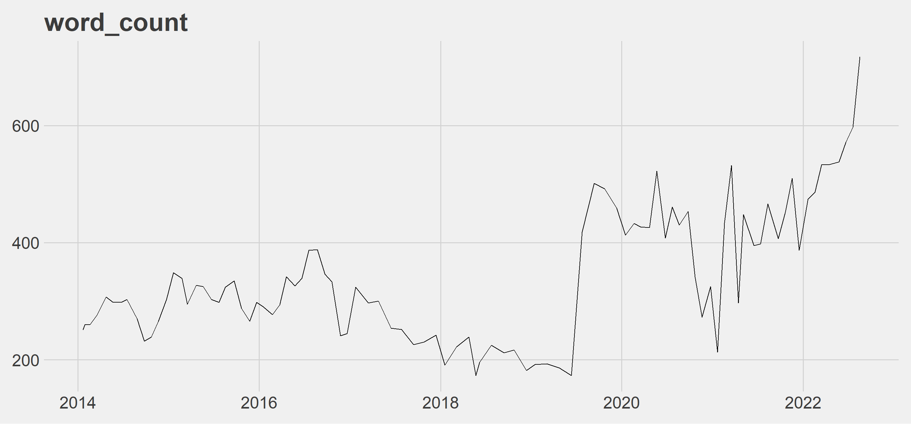
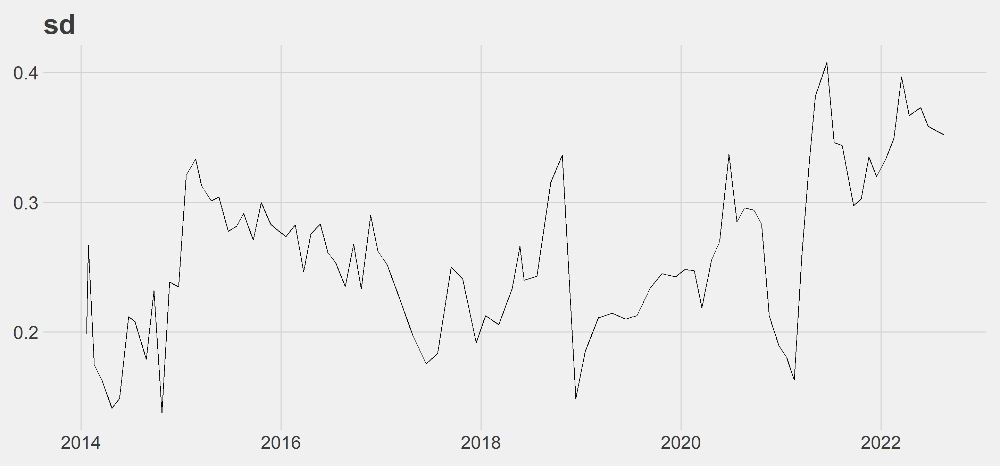
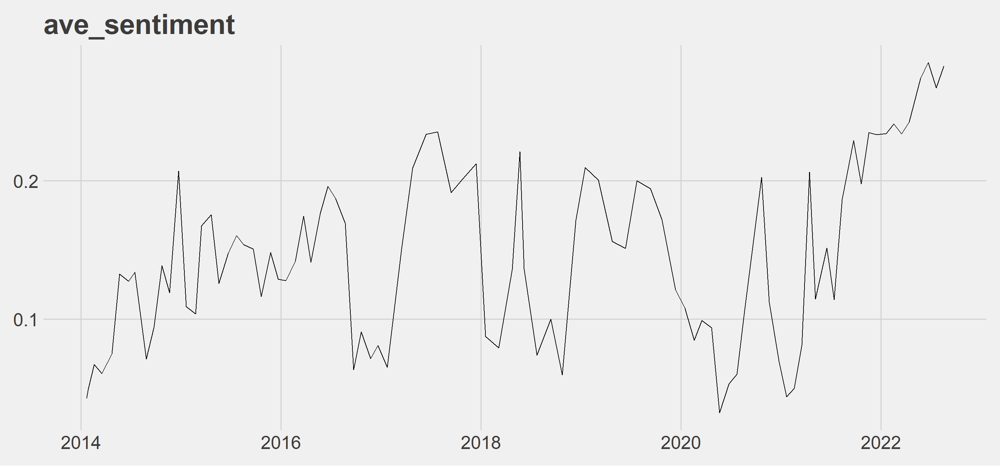
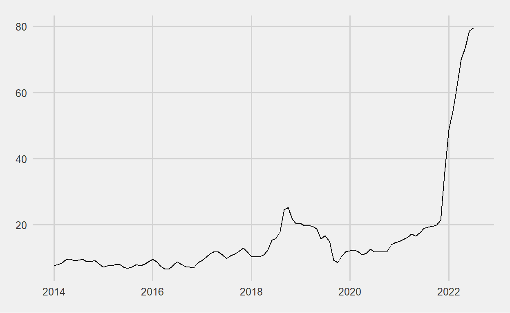

Sentiment analysis of the CBRT’s interest rates on press releases.
The CBRT cut its interest rate by 100 bps to 13% in its August 2022 meeting. In a country where official inflation goes to 100% and the exchange rate moves towards 20, the central bank of that country decides to cut interest rates. Hakan Kara, former chief economist of the CBRT, tweeted the day the decision was announced:
Economists are discussing why the CBRT cut its interest rate. I think this is no longer economists’ question. Sociologists, political scientists, psychologists, etc. should evaluate the issue.
Although, Press Releases on Interest Rates are not taken seriously because the credibility of the CBRT has been shaken, we will take it seriously for sentiment analysis. You can access the data I collected using web scraping by downloading post20_1.xlsx file on my GitHub account. The codes I used to collect the data will be available at the end of the post. The reason I started the analysis date from 2014 is that the CBRT stopped publishing its press releases in pdf format as of 2014.
In the table below, you can see the CBRT’s latest press release on interest rates.
| text |
|---|
| The Monetary Policy Committee (MPC) has decided to reduce the policy rate (one-week repo auction rate) from 14 percent to 13 percent. |
| The weakening effects of geopolitical risks on global economic activity continue to increase. Global growth forecasts for the upcoming period are being revised downwards and recession is increasingly assessed as an inevitable risk factor. While the negative consequences of supply constraints in some sectors, particularly basic food, have been alleviated by the strategic solutions facilitated by Türkiye, the upward trend in producer and consumer prices continues on an international scale. The effects of high global inflation on inflation expectations and international financial markets are closely monitored. Moreover, central banks in advanced economies emphasize that the rise in inflation may last longer than previously anticipated due to rising energy prices, imbalances between supply and demand, and rigidities in labor markets. The divergence in monetary policy steps and communications of central banks in advanced economies continue due to their diverse economic outlook. It is observed that central banks continue their efforts to develop new supportive measures and tools to cope with the increasing uncertainties in financial markets. |
| Robust growth in the beginning of the year continued in the second quarter as well, with the support of external demand. Compared to peer economies, job creation has been stronger. Considering the sectors that contribute to the employment increase, it is observed that the growth dynamics are supported by structural gains. While share of sustainable components of economic growth increases, the stronger than expected contribution of tourism revenues to the current account balance continues. On the other hand, high course of energy prices and the likelihood of a recession in main trade partners keep the risks on current account balance alive. Sustainable current account balance is important for price stability. The rate of credit growth and allocation of funds for real economic activity purposes are closely monitored. In addition, the recent increase in spread between policy rate and the loan interest rate is considered to reduce the effectiveness of monetary transmission. In this context, the Committee decided to further strengthen the macroprudential policy set with tools supporting the effectiveness of the monetary transmission mechanism. |
| Increase in inflation is driven by the lagged and indirect effects of rising energy costs resulting from geopolitical developments, effects of pricing formations that are not supported by economic fundamentals, strong negative supply shocks caused by the rise in global energy, food and agricultural commodity prices. The Committee expects disinflation process to start on the back of measures taken and decisively implemented for strengthening sustainable price and financial stability along with the resolution of the ongoing regional conflict. Additionally, leading indicators for the third quarter point to some loss of momentum in economic activity. It is important that financial conditions remain supportive to preserve the growth momentum in industrial production and the positive trend in employment in a period of increasing uncertainties regarding global growth as well as escalating geopolitical risk. Accordingly, the Committee has decided to reduce the policy rate by 100 basis points, and has assessed that the updated level of policy rate is adequate under the current outlook. To create an institutional basis for sustainable price stability, the comprehensive review of the policy framework continues with the aim of encouraging permanent and strengthened liraization in all policy tools of the CBRT. The credit, collateral and liquidity policy actions, of which the review process is finalized, will continue to be implemented to strengthen the effectiveness of the monetary policy transmission mechanism. |
| The CBRT will continue to use all available instruments decisively within the framework of liraization strategy until strong indicators point to a permanent fall in inflation and the medium-term 5 percent target is achieved in pursuit of the primary objective of price stability. Stability in the general price level will foster macroeconomic stability and financial stability through the fall in country risk premium, continuation of the reversal in currency substitution and the upward trend in foreign exchange reserves, and durable decline in financing costs. This would create a viable foundation for investment, production and employment to continue growing in a healthy and sustainable way. |
| The Committee will continue to take its decisions in a transparent, predictable and data-driven framework. |
| The summary of the Monetary Policy Committee Meeting will be released within five working days. |
Combining the rows of each date group into a single row is as follows.
master2 <- data.frame()
for(m in seq_along(unique(master$date))){
master_filtered <- master %>%
filter(date == unique(master$date)[m]) %>%
pull(text) %>%
paste(., collapse = " ") %>%
str_replace_all(., "[\r\n]" , "") %>%
as.data.frame() %>%
rename("text"=1) %>%
mutate(date = unique(master$date)[m])
master2 <- master2 %>%
bind_rows(master_filtered)
}We can move on to sentiment analysis and we are going to use the sentimentr package to do it at sentence level. sentiment_by(), one of the functions of the sentimentr package, is used to calculate polarity score by groups.
#install.packages("sentimentr")
library(sentimentr)
df_sentiment <- data.frame()
for(s in 1:nrow(master2)){
sentiment_by_date <- as.data.frame(sentiment_by(master2$text[s])) %>%
mutate(date = master2$date[s])
df_sentiment <- df_sentiment %>%
bind_rows(sentiment_by_date)
}for(p in 2:4){
df_sentiment %>%
select(5,all_of(p)) %>%
ggplot(aes(x = .[[1]], y = .[[2]])) +
geom_line() +
ggthemes::theme_fivethirtyeight() +
theme(plot.title = element_text(size = 30),
axis.text = element_text(size = 20)) +
labs(title = names(df_sentiment)[p]) -> plt
plot(plt)
}
words_count: Since the middle of 2019, there has been an increase in the number of words. The latest press release is at its peak. I leave the press release of the day the sharp rise started and the previous day below.
2019-06-12:
| text |
|---|
| The Monetary Policy Committee (the Committee) has decided to keep the policy rate (one-week repo auction rate) constant at 24 percent. |
| Recently released data show that rebalancing trend in the economy has continued. External demand maintains its relative strength while economic activity displays a slow pace, partly due to tight financial conditions. Current account balance is expected to maintain its improving trend. |
| Developments in domestic demand conditions and the tight monetary policy support disinflation. In order to contain the risks to the pricing behavior and to reinforce the disinflation process, the Committee has decided to maintain the tight monetary policy stance. |
| The Central Bank will continue to use all available instruments in pursuit of the price stability objective. Factors affecting inflation will be closely monitored and, monetary stance will be determined to keep inflation in line with the targeted path. |
| It should be emphasized that any new data or information may lead the Committee to revise its stance. |
| The summary of the Monetary Policy Committee Meeting will be released within five working days. |
2019-07-25:
Murat Uysal, the former governor of the CBRT, took office in July 2019.
| text |
|---|
| The Monetary Policy Committee (the Committee) has decided to reduce the policy rate (one-week repo auction rate) from 24 percent to 19.75 percent. |
| Recently released data indicate a moderate recovery in the economic activity. Goods and services exports continue to display an upward trend despite the weakening in the global economic outlook, indicating improved competitiveness. In particular, strong tourism revenues support the economic activity through direct and indirect channels. Looking forward, net exports are expected to contribute to the economic growth and the gradual recovery is likely to continue with the help of the disinflation trend and the partial improvement in financial conditions. The composition of growth is having a positive impact on the external balance. Current account balance is expected to maintain its improving trend. |
| Recently, weaker global economic activity and heightened downside risks to inflation have strengthened the possibility that advanced economy central banks will take expansionary monetary policy steps. While these developments support the demand for emerging market assets and the risk appetite, rising protectionism and uncertainty regarding global economic policies are closely monitored in terms of their impact on both capital flows and international trade. |
| Inflation outlook continued to improve. In the second quarter, inflation displayed a significant fall with the contribution from a deceleration in unprocessed food and energy prices. Domestic demand conditions and the tight monetary policy continue to support disinflation. Underlying trend indicators, supply side factors, and import prices lead to an improvement in the inflation outlook. In light of these developments, recent forecast revisions suggest that inflation is likely to materialize slightly below the projections of the April Inflation Report by the end of the year. Accordingly, considering all the factors affecting inflation outlook, the Committee decided to reduce the policy rate by 425 basis points. |
| The Committee assesses that maintaining a sustained disinflation process is the key for achieving lower sovereign risk, lower long-term interest rates, and stronger economic recovery. Keeping the disinflation process in track with the targeted path requires the continuation of a cautious monetary stance. In this respect, the extent of the monetary tightness will be determined by considering the indicators of the underlying inflation trend to ensure the continuation of the disinflation process. The Central Bank will continue to use all available instruments in pursuit of the price stability and financial stability objectives. |
| It should be emphasized that any new data or information may lead the Committee to revise its stance. |
| The summary of the Monetary Policy Committee Meeting will be released within five working days. |
sd: The ups and downs after 2018 are more volatile than before 2018. The worsening in inflation can be seen more clearly after 2018.
ave_sentiment: Although it is a series with ups and downs, it can be seen that the average score is on the positive side and is in an upward trend after 2022. The first thing that comes to my mind here is that the central banks at least try to stabilize the situation with their verbal guidance, even though it is getting worse.
Inflation in Turkey started to give signals of getting out of control as of 2018. The reason I shared the inflation graph is both to read it together with the graphs above and because the primary objective of the Bank is to achieve and maintain price stability.
# post20_2.xlsx
cpi <- readxl::read_excel("data2.xlsx") %>%
mutate(date = as.Date(paste0(date,"-",1)))
ggplot(cpi, aes(x = date, y = inflation)) +
geom_line() +
ggthemes::theme_fivethirtyeight()
We may wonder: Have we succeeded in perceiving emotions? Let’s take a look at the latest press release as an example.
highlight(sentiment_by(master2$text[nrow(master2)]))The weakening effects of geopolitical risks on global economic activity continue to increase.
The above sentence is negative but perceived as positive. Let’s take a closer look.
"The weakening effects of geopolitical risks on global economic activity continue to increase." %>%
extract_sentiment_terms() %>%
unlist(.) element_id
"1"
sentence_id
"1"
negative1
"weakening"
negative2
"risks"
negative3
"economic"
neutral1
"the"
neutral2
"effects"
neutral3
"of"
neutral4
"geopolitical"
neutral5
"on"
neutral6
"activity"
neutral7
"to"
positive1
"global"
positive2
"continue"
positive3
"increase"
sentence
"The weakening effects of geopolitical risks on global economic activity continue to increase." Although the content of the package used is useful, it will be useful to use it carefully. This study also shows that a sentiment analysis package can be made for central banks, for example.
You can access the other codes I mentioned at the beginning below.
library(rvest)
library(tidyverse)
urls <- str_c(
"https://www.tcmb.gov.tr/wps/wcm/connect/EN/TCMB+EN/Main+Menu/Announcements/Press+Releases/",
seq(2014,2022,1)
)
df_urls <- data.frame()
for(i in seq_along(urls)){
c1 <- read_html(urls[i]) %>%
html_nodes("div.collection-content.w-clearfix a.collection-title") %>%
html_attr("href")
c2 <- read_html(urls[i]) %>%
html_nodes("div.collection-content.w-clearfix a.collection-title") %>%
html_text()
tbl <- data.frame(
c1 = c1,
c2 = c2
)
df_urls <- df_urls %>%
bind_rows(tbl)
Sys.sleep(3)
}
df_urls <- df_urls %>%
filter(grepl("Press Release on Interest Rates",c2)) %>%
mutate(c1 = paste0("https://www.tcmb.gov.tr",c1))
df_text <- data.frame()
for(j in 1:nrow(df_urls)){
txt <- read_html(df_urls$c1[j]) %>%
html_nodes("div.tcmb-content.type-prg p") %>%
html_text() %>%
as.data.frame() %>%
rename("text"=1) %>%
filter(text != "") %>%
mutate("date"=.$text[2])
df_text <- df_text %>%
bind_rows(txt)
print(j)
Sys.sleep(30)
}
governors <- c(
"Şahap Kavcıoğlu",
"Naci Ağbal",
"Murat Uysal",
"Murat Çetinkaya",
"Erdem Başçı"
)
df_text2 <- df_text %>%
mutate(date = gsub("Release Date: ","",date),
date = gsub("Aygust","August",date),
date = lubridate::dmy(date),
text = as.character(text)) %>%
filter(!(grepl("No:|No.",text)) & grepl("[[:space:]]",text) & !(grepl(paste(governors,collapse="|"),text))) %>%
arrange(date)
#openxlsx::write.xlsx(df_text2,"data.xlsx")